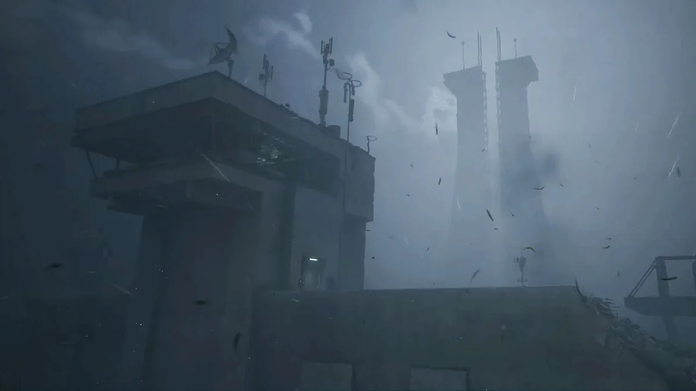

SPERANZA - The Speranza Weather Bureau (which currently consists of someone sticking her head out of a vent for about three to five seconds) has issued a "Level 5 Hurricane Warning" starting on February 24th.
According to the report, the winds will be so intense that they will physically alter the laws of "Throwing Stuff". Researchers are warning Raiders that their tactical gear is about to become a liability.

Raiders are advised to be careful topside since they won't be able to "see shit"
The most dangerous manifestation of this atmospheric shift is the Boomerang Effect, a phenomenon where the intense winds physically hijack the trajectory of your throwables.
When attempting to throw a grenade into an ARC, the high-velocity air might catch the projectile mid-flight, forcing the grenade into a 180-degree U-turn, sending the explosive sailing directly back at the thrower’s own feet; in specialist words, “Not optimal”.
Some veteran raiders are explaining that this wind changes are “the natural cycle of The Rust Belt” and should not be taken seriously.
"You kids and your “extreme weather” and “climate change” reports," Old Greg tells the Gazette. "Back in my day, we didn't have a “Shrouded Sky”, if your grenade didn't hit the target, it wasn't a meteorological anomaly, it was a skill issue."